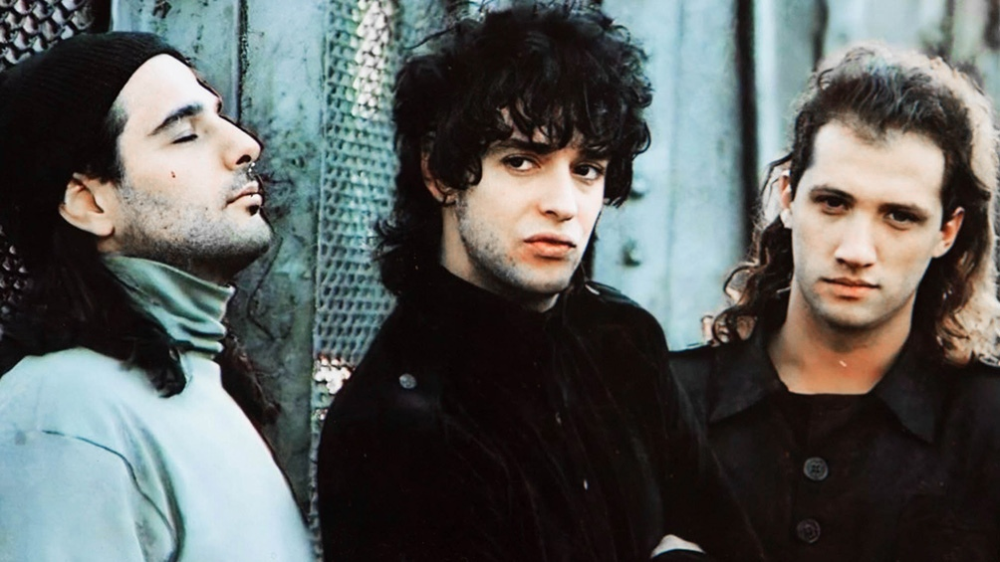

SODA STEREO
Es considerada por la crítica especializada como la más importante, popular e influyente de las bandas en español de todos los tiempos y una leyenda de la música latina. Fueron el primer grupo de habla hispana en conseguir un éxito masivo en Latinoamérica y tuvieron un papel muy importante en el desarrollo y la difusión del rock iberoamericano y el rock en español durante las décadas de 1980 y 1990.
Durante su carrera, fueron vanguardistas y marcaron tendencia en Latinoamérica, en la que protagonizaron diversos géneros como la música divertida de sus inicios, la new wave, el dark, el hard rock, el rock alternativo y el rock electrónico de sus finales.